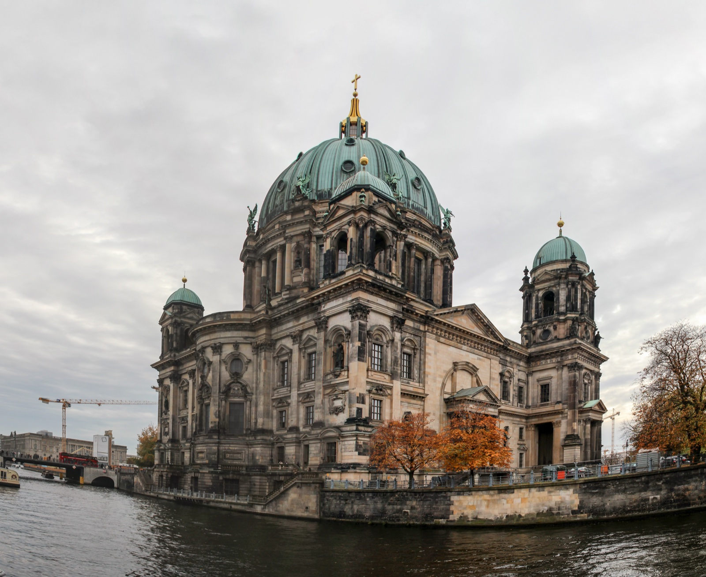

Central Berlin · one honest frame
Berlin Landmark Window
Place a two-hour frame around the side of central Berlin where you already are. Keep one interior or keep the whole thing outdoors.
How this works
Move the frame, not the whole city
Tap the side closest to you, then decide whether a current ticket or registration deserves the one indoor commitment. The yellow frame shows the landmarks I would keep in view, not a live navigation estimate.
2. Set your yellow frame
Museum Island and the cathedral stay in the east frame. Choose a card to make the landmark your visual anchor.
The photos are a way to choose scale and direction. They are not a ticket, opening-hours or access promise.
3. Keep the pressure off
What do you do with interiors?
Your two-hour window
East window: Museum Island at street level
Do not add this
A second museum ticket. The island is still worth seeing when the walk stays outdoors.